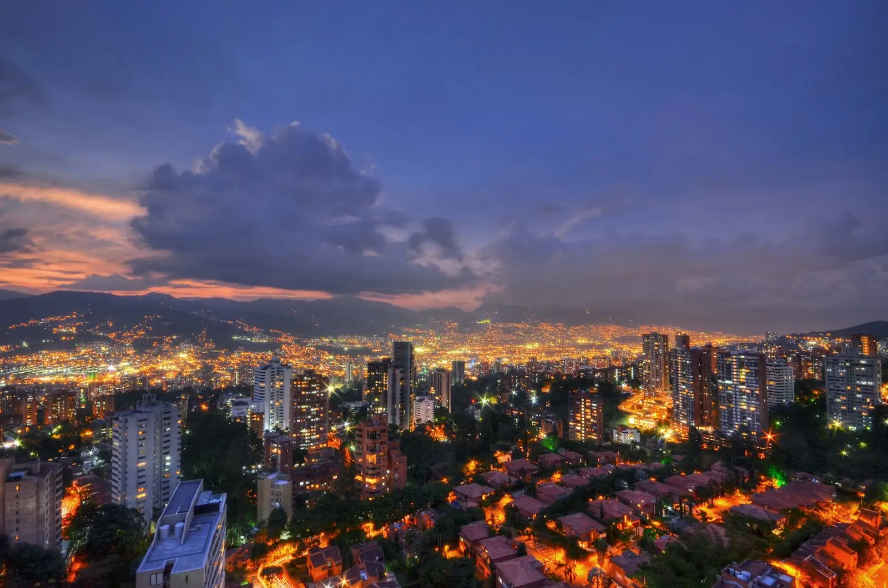

Cata de frutas
Frutas exóticas explicadas y probadas en el puesto.

Lulo, granadilla, maracuyá, guanábana. Colombia se prueba en sus plazas de mercado, entre puestos de frutas, hierbas y cocina popular.
Las plazas de mercado son el lugar donde se cruza todo Antioquia: campesinos, cocineras, yerbateros y vendedores que llevan toda la vida en el mismo puesto. Colombia tiene una enorme variedad de frutas y aquí se ve, se huele y se prueba.
Recorremos plazas como la Minorista con guías locales, probamos frutas que no encontrarás en otro país y terminamos en la mesa, con un almuerzo típico.

Frutas exóticas explicadas y probadas en el puesto.
Los yerbateros y sus remedios tradicionales.
Sopa, frijoles o sancocho donde comen los que trabajan ahí.
Desayuno paisa para empezar con energía.